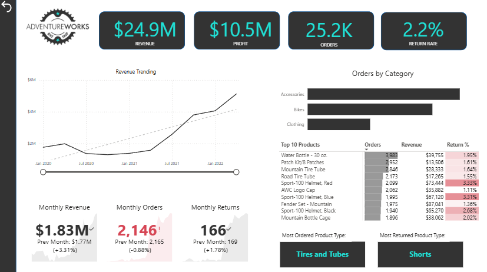
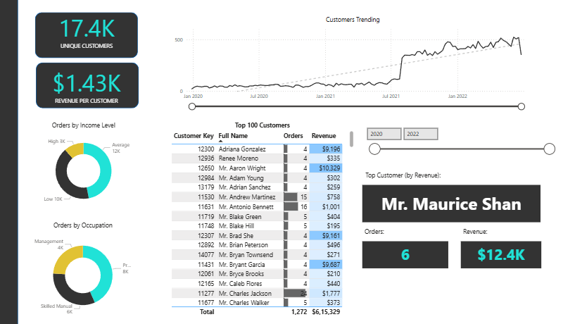
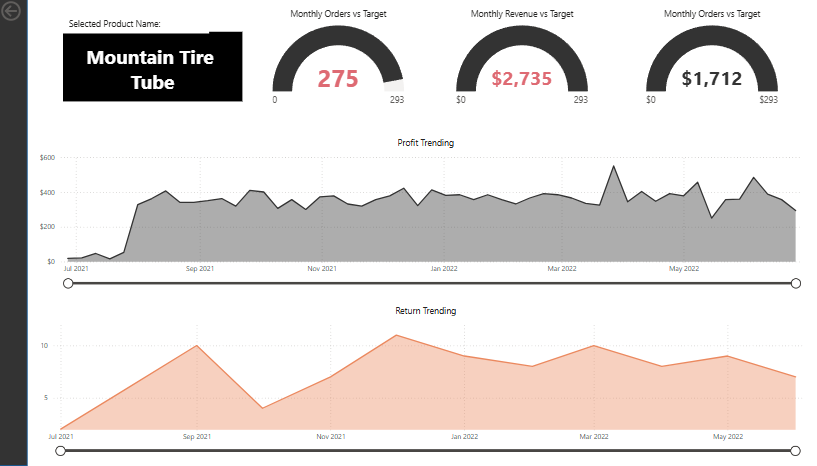
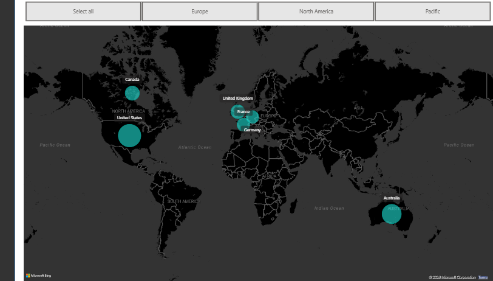
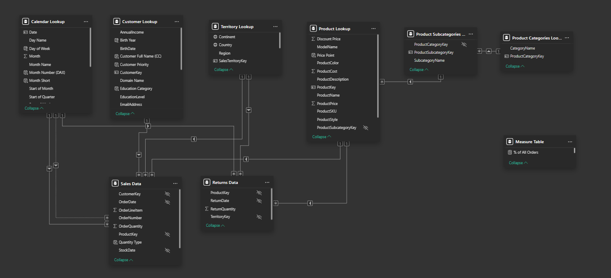

About Me
I have spent the last 3.5 years working in healthcare market research operations at ZoomRx, managing research workflows, coordinating stakeholders, analysing operational metrics, and ensuring successful project delivery. I am now expanding that operational experience into Business Intelligence by building interactive Power BI dashboards, writing SQL queries, and solving business problems using data.
Professional Experience
Senior Associate – Community
ZoomRx
- Managed healthcare market research operations.
- Coordinated multiple concurrent projects.
- Delivered 100% sample fulfilment across key studies.
- Worked with Excel, SQL and Power BI reporting.
- Collaborated with internal and external stakeholders.
Core Skills
Power BI
DAX • Data Modelling • Power Query • Dashboard Design
SQL
Joins • CTEs • Window Functions • Aggregations
Business Operations
Process Improvement • Reporting • Stakeholder Management
Healthcare Research
Operations • Recruitment • Survey Management
Featured Project
Adventure Works Sales Analytics Dashboard
A Power BI dashboard built using the Adventure Works dataset to help business leaders monitor sales performance, customer behaviour, product trends and geographical insights through interactive dashboards.





Highlights
- ETL using Power Query
- Star Schema Data Model
- DAX Measures
- Executive Dashboard
- Customer Analytics
- Product Performance
- Geographical Analysis
Certifications
Lean Six Sigma Yellow Belt
Certified in Lean Six Sigma fundamentals and process improvement methodologies.
Let's Connect
I'm open to Business Analyst, Operations Analyst and Data Analyst opportunities.